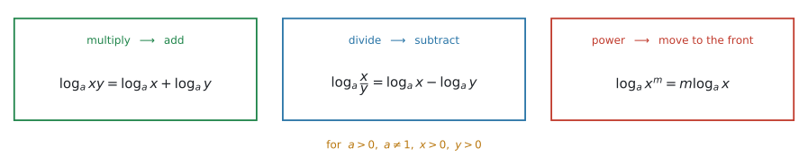
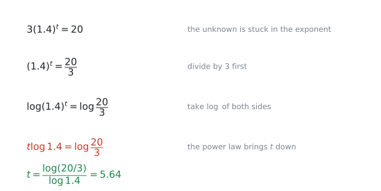
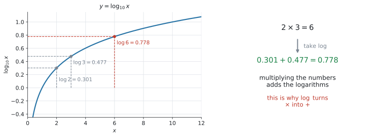
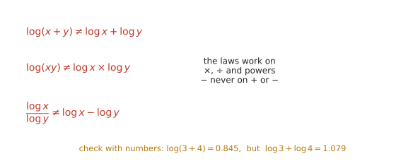
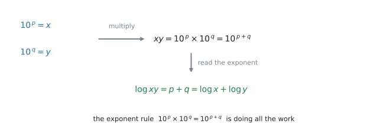

AHL 1.9 — Laws of logarithms（対数法則）
- \(3\) つの laws of logarithms（対数法則）——積は和、商は差、累乗は前へ——を書ける。
- 法則が使えるのは \(a,\ x,\ y > 0\) のときだけだと分かる。
- いくつかの \(\log\) を \(1\) つにまとめる、逆に \(1\) つを分ける、どちらもできる。
- SL 1.5 で学んだ指数方程式を、power law（累乗の法則、\(\log_a x^{m} = m\log_a x\)）を使って別の形でも解ける。
- \(e\) の入った減衰の式から、half-life（半減期）を求められる。
- 大きな数の number of digits（桁数）を \(\log\) で求められる。
\(\log\) そのものの意味——「指数を取り出す道具」——は、SL 1.5 にあります。
\[ a^{x} = b \quad \iff \quad x = \log_a b \]
この行き来があやしければ、先に SL 1.5 の後半を読んでください。この項目で新しく出てくるのは、\(3\) つの法則です。 SL 1.5 で作った土台は、そのまま使えます。
指数方程式も、SL 1.5 ですでに解いています。そこでは \(a^{x} = b \iff x = \log_a b\) と、定義から直接取り出しました。このページでは、両辺に同じ \(\log\) を取り、power law で指数を前に出す解き方も学びます。同じ方程式を、別の形でも解けるようになるということです。
SL 1.5 のページには「log の法則は SL の範囲外です」と書いてあります。その範囲外が、ここです。
シラバスにこう書かれています。
In examinations, \(a\) will equal \(10\) or \(e\).
つまり、\(\log_{1.08}\) のような底が本文に出ることはあっても、法則を使わせる問題の底は \(\log_{10}\) か \(\ln\) です。 \(\log_7\) の計算を練習する必要はありません。
底を書かない \(\log\) は \(\log_{10}\) のこと、\(\ln\) は \(\log_e\) のことです。
The idea
\(\log\) は「指数を取り出す道具」でした。指数には、すでに知っている法則があります。
\[ 10^{\,p} \times 10^{\,q} = 10^{\,p+q} \]
指数の世界の掛け算は、指数どうしの足し算です。\(\log\) はその指数を取り出す道具ですから、\(\log\) の世界に持ちこむと、掛け算が足し算になります。 この項目は、その一言をきちんと書き下したものです。
1. \(3\) つの法則

図 1 が全部です。公式集の AHL 1.9 の欄に、この \(3\) つが \(\ \text{for } a,\ x,\ y > 0\) という条件つきで印刷されています。ですから、\(3\) つの式そのものを覚える必要はありません。 覚えるべきなのは、どの場面でどれを使うかのほうです。
\[ \log_a xy = \log_a x + \log_a y \tag{1}\]
\[ \log_a \frac{x}{y} = \log_a x - \log_a y \tag{2}\]
\[ \log_a x^{m} = m \log_a x \tag{3}\]
言葉にすると、こうなります。
| もとの中身 | \(\log\) にすると |
|---|---|
| 掛け算 \(xy\) | 足し算 \(\log x + \log y\) |
| 割り算 \(\dfrac{x}{y}\) | 引き算 \(\log x - \log y\) |
| 累乗 \(x^{m}\) | 指数が前に出る \(m\log x\) |
数で確かめておきます。\(\log 2 = 0.301\)、\(\log 3 = 0.477\)、\(\log 6 = 0.778\) です。
\[ \log 2 + \log 3 = 0.301 + 0.477 = 0.778 = \log 6 \]
\(2 \times 3 = 6\) という掛け算が、\(0.301 + 0.477\) という足し算になりました。
2. 使える条件は \(a,\ x,\ y > 0\) です
公式集にも、\(3\) つの式の下に for \(a,\ x,\ y > 0\) と印刷されています。
理由は \(\log\) の定義そのものです。\(\log_a x\) は「\(a\) を何乗したら \(x\) になるか」でした。
- \(x \le 0\) … \(10^{\,\square}\) は正の数にしかなりません。だから \(\log(-5)\) や \(\log 0\) はありません。
- \(a \le 0\) … 底として使えません。
\(a = 1\) も底になれません（\(1\) は何乗しても \(1\) のままだからです）。ただしこれは、公式集の AHL 1.9 の欄ではなく、SL 1.5 の欄に \(a \neq 1\) として書かれている条件です。試験に出る底は \(10\) か \(e\) なので、実際に困ることはありません。
\(\log\!\left((-2)^{2}\right)\) は、中身が \(4\) なので計算できます。しかし \(2\log(-2)\) は書けません。\(\log(-2)\) が存在しないからです。
\[ \log\!\left((-2)^{2}\right) = \log 4 = 0.602 \qquad \text{だが} \qquad 2\log(-2) \ \text{は定義されない} \]
試験で \(x\) の範囲まで問われることは多くありませんが、「\(\log\) の中身は正」は頭に置いてください。方程式を解いたあとで、\(\log\) の中身が負になる解を捨てる場面があります。
3. \(\log\) でも \(\ln\) でも、法則は同じです
\(3\) つの法則は、底が何であっても成り立ちます。試験に出るのは \(10\) か \(e\) ですから、実際には次の \(2\) 通りだけです。
\[ \log xy = \log x + \log y, \qquad \ln xy = \ln x + \ln y \]
どちらを使うかは、問題の中身で決まります。
| 式に出てくるもの | 使う \(\log\) |
|---|---|
| \(10^{x}\)、\(1.4^{t}\)、\((0.85)^{t}\) など | \(\log_{10}\) でも \(\ln\) でもどちらでもよい |
| \(e^{kt}\) | \(\ln\)（\(\ln e = 1\) なので、いちばん短くなる） |
\(e^{-0.03t} = 0.25\) に \(\log_{10}\) を取っても解けますが、\(\ln\) なら \(-0.03t = \ln 0.25\) と一行で済みます。
\(\ln e^{\square} = \square\) になるからです。これは 式 3 と \(\ln e = 1\) から出ます。
4. 使いどころ その1 — 指数の中の未知数を、外に出す
この項目で、いちばん出る形です。
\[ 3(1.4)^{t} = 20 \]
\(t\) が指数の中にいるので、割ったり引いたりしても外に出てきません。ここで 式 3 の出番です。

図 2 の \(4\) 段が、そのまま答案になります。
- まず指数のかたまりだけにします。\((1.4)^{t} = \dfrac{20}{3}\)
- 両辺の \(\log\) を取ります。 \(\log (1.4)^{t} = \log \dfrac{20}{3}\)
- 累乗の法則で \(t\) が前に出ます。 \(t\log 1.4 = \log \dfrac{20}{3}\)
- あとは \(\log 1.4\) というただの数で割るだけです。
\[ t = \frac{\log (20/3)}{\log 1.4} = 5.638\ldots = 5.64 \ (3\ \text{s.f.}) \]
\(3(1.4)^{t} = 20\) にいきなり \(\log\) を取ると、左辺は \(\log 3 + t\log 1.4\) になります。
間違いではありませんが、\(1\) 行増えます。先に \(3\) で割るほうが速く、写し間違いも減ります。
5. 使いどころ その2 — 掛け算を足し算に変えて、大きさを測る

図 3 の左は \(y = \log_{10} x\) のグラフです。\(x\) が \(2\) から \(6\) へ \(3\) 倍になるあいだに、\(y\) は \(0.301\) から \(0.778\) へ \(0.477\) 増えるだけです。
掛け算が足し算に化ける——これが \(\log\) の使いどころのもう \(1\) つです。
桁数を数える
\(2^{100}\) は何桁でしょうか。実際に計算しなくても、\(\log\) で分かります。
\[ \log 2^{100} = 100 \log 2 = 100 \times 0.301030\ldots = 30.103 \]
つまり \(2^{100} = 10^{30.103}\) です。\(10^{30}\) より大きく、\(10^{31}\) より小さいので、
\[ 2^{100} = 1.27 \times 10^{30} \quad \Rightarrow \quad \mathbf{31}\ \text{桁} \]
\(N\) が正の整数のとき、\(\log_{10} N\) の整数部分が \(30\) なら、\(N\) は \(31\) 桁です。
\(10^{0} = 1\)（\(1\) 桁）、\(10^{1} = 10\)（\(2\) 桁）、\(10^{2} = 100\)（\(3\) 桁）と並べれば、\(1\) 足す理由が見えます。
AHL 2.10 へつながります
シラバスは、この項目に
Link to: scaling large and small numbers (AHL 2.10)
と注を付けています。地震の \(M\)、音の \(\text{dB}\)、pH——桁が違いすぎて並べられない量を、\(\log\) を取って \(1\) 本の軸に載せるのが AHL 2.10 です。
\(\log\) が掛け算を足し算に変えるからこそ、\(100\) 倍が「\(+2\)」という一定の間隔になります。ここで練習する法則が、そのまま使われます。
6. 成り立たない形

法則が使えるのは、\(\log\) の中身が掛け算・割り算・累乗のときだけです。図 4 の \(3\) つは、どれも成り立ちません。
\[ \log (x + y) \neq \log x + \log y \]
\[ \log (xy) \neq \log x \times \log y \]
\[ \frac{\log x}{\log y} \neq \log x - \log y \]
数を入れれば一目です。\(x = 3\)、\(y = 4\) とすると
\[ \log(3 + 4) = \log 7 = 0.845, \qquad \log 3 + \log 4 = 1.079 \]
まったく違います。
\(\log(x+y)\) は、それ以上どうにもなりません。 これを分けたくなったら、その気持ちを止めてください。
分けられるのは \(\log(xy)\) だけです。中身が掛け算になっているかどうかを、毎回目で確かめてください。
Why it works
なぜ「掛けたら足す」になるのか、\(1\) つ目の法則だけ見ておきます。残りの \(2\) つも、まったく同じ理屈です。

\(\log x = p\)、\(\log y = q\) とします。\(\log\) の定義（\(a^{x} = b \iff x = \log_a b\)）から、これは
\[ 10^{\,p} = x, \qquad 10^{\,q} = y \]
ということです。この \(2\) つを掛けます。
\[ xy = 10^{\,p} \times 10^{\,q} = 10^{\,p+q} \]
最後の等号は、指数法則そのものです（SL 1.5 の前半）。ここが仕組みの全部です。
いま \(xy = 10^{\,p+q}\) という形になったので、もう一度 \(\log\) の定義を使って指数を取り出します。
\[ \log xy = p + q = \log x + \log y \]
式 1 が出ました。
同じように、\(\dfrac{x}{y} = \dfrac{10^{\,p}}{10^{\,q}} = 10^{\,p-q}\) から 式 2 が、\(x^{m} = (10^{\,p})^{m} = 10^{\,pm}\) から 式 3 が出ます。
つまり、対数法則の仕組みは、すでに学んだ指数法則から説明できます。 掛け算・割り算・累乗の指数法則を、\(\log\) の側から書いたものです。
これで、第6節の \(3\) つが成り立たない理由も見えます。\(10^{\,p} + 10^{\,q}\) を \(10\) の \(1\) つの累乗にまとめる指数法則は、存在しないからです。
Worked examples
問題文は英語です。意味が理解できなかったら、問題文の下の「日本語訳」を開いてください。解説は日本語です。
例題 1 Find the exact value of each of the following.
(a) \(\log 8 + \log 125\)
(b) \(\log 200 - \log 2\)
(c) \(3\log 2 + \log 125\)
日本語訳
次のそれぞれの値を、正確に（近似せずに）求めなさい。
(a) \(\log 8 + \log 125\)
(b) \(\log 200 - \log 2\)
(c) \(3\log 2 + \log 125\)
Find the exact value と言われているので、電卓の小数ではなく整数で答えます。 \(\log\) を \(1\) つにまとめて、\(10\) の何乗かを見るのが手順です。
(a) 足し算なので、式 1 を逆向きに使います。
\[ \log 8 + \log 125 = \log (8 \times 125) = \log 1000 \]
\(1000 = 10^{3}\) なので、\(\log 1000 = 3\) です。
(b) 引き算なので 式 2 です。
\[ \log 200 - \log 2 = \log \frac{200}{2} = \log 100 = 2 \]
(c) いきなりはまとめられません。係数の \(3\) を、先に中に入れます（式 3）。
\[ 3\log 2 = \log 2^{3} = \log 8 \]
あとは (a) と同じです。
\[ \log 8 + \log 125 = \log 1000 = 3 \]
(a) \(\log 8 + \log 125 = \log 1000 = 3\)
(b) \(\log 200 - \log 2 = \log 100 = 2\)
(c) \(3\log 2 + \log 125 = \log 8 + \log 125 = \log 1000 = 3\)
\(8 \times 125 = 1000\)、\(200 \div 2 = 100\)。この例題は、まとめたあとの数が \(10\)、\(100\)、\(1000\) になるように作られています。
ですから、この \(3\) 問でそうならなかったら、法則を取りちがえていないか確かめてください。
一般の問題では、正しく変形しても \(\log 12\) や \(\ln 7\) のような形が残ります。 Find the exact value と書かれているときだけ、きれいな数になると思ってください。
例題 2 Write each expression as a single logarithm, where \(x > 0\) and \(y > 0\).
(a) \(2\ln x + \ln y\)
(b) \(\ln x - 3\ln y\)
日本語訳
次の式を、\(1\) つの対数で表しなさい。ただし \(x > 0\)、\(y > 0\) とします。
(a) \(2\ln x + \ln y\)
(b) \(\ln x - 3\ln y\)
手順はいつも同じ \(2\) 段です。
1. 係数を、累乗として中に入れる。 2. 足し算なら掛ける、引き算なら割る。
(a) まず \(2\) を中へ。
\[ 2\ln x = \ln x^{2} \]
足し算なので、中身を掛けます。
\[ \ln x^{2} + \ln y = \ln (x^{2} y) \]
(b) \(3\) を中へ入れると \(3\ln y = \ln y^{3}\) です。引き算なので、中身を割ります。
\[ \ln x - \ln y^{3} = \ln \frac{x}{y^{3}} \]
検算。 \(x = 3\)、\(y = 5\) を入れてみます。
- 左は \(2\ln 3 + \ln 5 = 3.807\)、右は \(\ln (9 \times 5) = \ln 45 = 3.807\) ✓
- 左は \(\ln 3 - 3\ln 5 = -3.730\)、右は \(\ln \dfrac{3}{125} = \ln 0.024 = -3.730\) ✓
(a) \(2\ln x + \ln y = \ln x^{2} + \ln y = \ln (x^{2} y)\)
(b) \(\ln x - 3\ln y = \ln x - \ln y^{3} = \ln \dfrac{x}{y^{3}}\)
これは \(\ln x^{2}\) です。係数は、指数として中に入ります。 掛け算として入るのではありません。
\(x = 3\) で試すと、\(2\ln 3 = 2.197\)、\(\ln 9 = 2.197\)、\(\ln 6 = 1.792\)。\(\ln 6\) は合いません。
まとめるのと同じ手順を、逆にたどれば分けられます。 中身が掛け算なら足し算に分け、そのあと指数を前に出します。
\[ \log (x^{3} y) = \log x^{3} + \log y = 3\log x + \log y \qquad (x > 0,\ y > 0) \]
この向きの練習は、演習 \(5\) にあります。
例題 3 Solve the equation \(3(1.4)^{t} = 20\), giving your answer correct to three significant figures.
日本語訳
方程式 \(3(1.4)^{t} = 20\) を解きなさい。答えは有効数字 \(3\) 桁で求めなさい。
第4節の \(4\) 段そのままです。まず \(3\) で割って、指数のかたまりだけにします。
\[ (1.4)^{t} = \frac{20}{3} \]
両辺の \(\log\) を取ります。
\[ \log (1.4)^{t} = \log \frac{20}{3} \]
式 3 で \(t\) が前に出ます。
\[ t \log 1.4 = \log \frac{20}{3} \]
\(\log 1.4\) はただの数（\(0.146\ldots\)）なので、割るだけです。
\[ t = \frac{\log (20/3)}{\log 1.4} = 5.638\ldots = 5.64 \ (3\ \text{s.f.}) \]
検算。 \(3 \times 1.4^{5.638} = 20.0\) ✓
\[ (1.4)^{t} = \frac{20}{3} \]
\[ t \log 1.4 = \log \frac{20}{3} \]
\[ t = \frac{\log (20/3)}{\log 1.4} = 5.638\ldots = 5.64 \ (3\ \text{s.f.}) \]
\[ t = \frac{\ln (20/3)}{\ln 1.4} = 5.638\ldots \]
底は打ち消し合うので、どちらを使っても構いません。 電卓で押しやすいほうを使ってください。
例題 4 The mass of a radioactive sample is modelled by \(M(t) = 200e^{-0.03t}\), where \(M\) is measured in grams and \(t\) is measured in years.
(a) Find the time taken for the mass to fall to \(50\) grams.
(b) Find the half-life of the sample, that is, the time taken for the mass to fall to half of its value at any given moment.
(c) State what happens to the half-life if the initial mass is \(400\) grams instead of \(200\) grams. Give a reason for your answer.
日本語訳
ある放射性物質の質量は \(M(t) = 200e^{-0.03t}\) で表されます。\(M\) の単位はグラム、\(t\) の単位は年です。
(a) 質量が \(50\) グラムになるまでの時間を求めなさい。
(b) この物質の半減期、すなわち、ある時点の質量が半分になるまでの時間を求めなさい。
(c) はじめの質量が \(200\) グラムではなく \(400\) グラムだったとき、半減期がどうなるかを述べなさい。その理由も書きなさい。
(a) \(e\) があるので \(\ln\) を使います（表 2）。
\[ 200e^{-0.03t} = 50 \quad \Rightarrow \quad e^{-0.03t} = \frac{1}{4} \]
両辺の \(\ln\) を取ります。\(\ln e^{\square} = \square\) なので、左辺は指数がそのまま出ます。
\[ -0.03t = \ln \frac{1}{4} = -1.386\ldots \]
\[ t = \frac{-1.386\ldots}{-0.03} = 46.209\ldots = 46.2\ \text{年} \ (3\ \text{s.f.}) \]
検算。 \(200e^{-0.03 \times 46.209} = 50.0\) ✓
(b) 半減期は、いつ測っても同じです。はじめの \(200\) から \(100\) になるまでを求めれば十分です。
\[ 200e^{-0.03t} = 100 \quad \Rightarrow \quad e^{-0.03t} = \frac{1}{2} \]
\[ -0.03t = \ln \frac{1}{2} = -\ln 2 \quad \Rightarrow \quad t = \frac{\ln 2}{0.03} = 23.10\ldots = 23.1\ \text{年} \]
(c) (b) の \(2\) 行目で、\(200\) は両辺を割ったときに消えました。\(400\) でも同じことが起こります。
\[ 400e^{-0.03t} = 200 \quad \Rightarrow \quad e^{-0.03t} = \frac{1}{2} \]
\(1\) 行目からあとが (b) とまったく同じ式になるので、半減期も同じ \(23.1\) 年です。
Give a reason と言われているので、理由の一文が要ります。 「はじめの量が約分されて消えるから」が理由です。
試験ではこう書く
The half-life is unchanged, at \(23.1\) years. The initial mass cancels when both sides are divided by it, so the half-life depends only on the rate \(0.03\).
（半減期は変わらず \(23.1\) 年です。両辺をはじめの質量で割ると、それが約分されて消えるので、半減期は \(0.03\) という減り方だけで決まるからです、という意味です。）
(a) \[ e^{-0.03t} = 0.25 \quad \Rightarrow \quad -0.03t = \ln 0.25 \] \[ t = 46.209\ldots = 46.2\ \text{years} \ (3\ \text{s.f.}) \]
(b) \[ e^{-0.03t} = 0.5 \quad \Rightarrow \quad -0.03t = \ln 0.5 \] \[ t = \frac{\ln 2}{0.03} = 23.10\ldots = 23.1\ \text{years} \ (3\ \text{s.f.}) \]
(c) The half-life is unchanged, at \(23.1\) years. The initial mass cancels when both sides are divided by it, so the half-life depends only on the rate \(0.03\).
- の \(2\) 行目で、\(200\) は約分されて消えました。はじめの量が何であっても、半分になるまでの時間は \(\dfrac{\ln 2}{0.03}\) です。
\(46.2\) 年で \(\frac{1}{4}\)、\(23.1\) 年で \(\frac{1}{2}\)。\(23.1 \times 2 = 46.2\) になっているのも、よい検算です。
例題 5 Given that \(\log_{10} 2 = 0.301030\) correct to six significant figures, find the number of digits in \(2^{100}\).
日本語訳
\(\log_{10} 2 = 0.301030\)（有効数字 \(6\) 桁）であることを使って、\(2^{100}\) の桁数を求めなさい。
\(2^{100}\) をそのまま電卓に入れると、\(1.2676506\ldots \text{E}30\) のような表示になり、桁数を数えるには使いにくいです。\(\log\) を取ります。
式 3 で、指数の \(100\) が前に出ます。
\[ \log 2^{100} = 100 \log 2 = 100 \times 0.301030 = 30.1030 \]
これは「\(2^{100} = 10^{30.103}\)」という意味です。\(10^{30.103} = 10^{0.103} \times 10^{30}\) なので
\[ 2^{100} = 1.27 \times 10^{30} \]
\(10^{30}\) が \(31\) 桁（\(1\) のうしろに \(0\) が \(30\) 個）ですから、\(2^{100}\) も \(31\) 桁です。
\[ \log_{10} 2^{100} = 100\log_{10} 2 = 30.1030 \]
\[ 10^{30} < 2^{100} < 10^{31} \]
Therefore \(2^{100}\) has \(31\) digits.
\(N\) が正の整数のとき、\(\log_{10} N\) の整数部分が \(30\) なら \(N\) は \(31\) 桁です（第5節）。
ただし、答案には \(10^{30} < N < 10^{31}\) の \(1\) 行を書いてください。 覚えた規則をそのまま書くより、はさんで見せるほうが確実に点になります。
Common errors
いちばん多い誤りです。 分けられるのは \(\log(xy)\) だけで、\(\log(x+y)\) はそれ以上どうにもなりません。
数を入れた反例は第6節にあります。\(\log\) の中が \(+\) か \(-\) なら、手は出せません。
分数の形につられる誤りです。引き算になるのは \(\log \dfrac{x}{y}\)、つまり割り算が \(\log\) の中にあるときだけです。
\[ \log \frac{x}{y} = \log x - \log y \qquad \text{だが} \qquad \frac{\log x}{\log y} \neq \log x - \log y \]
\(\log\) の記号が \(1\) つか \(2\) つかで見分けてください。
\((1.4)^{t} = \dfrac{20}{3}\) から、いきなり \(t\log 1.4 = \dfrac{20}{3}\) と書く誤りです。
両辺に \(\log\) を取ります。 右辺も \(\log \dfrac{20}{3}\) にしてください。片方だけだと、答えが \(45.6\) のようにまったく違う値になります。
\(\log (20/3) - \log 1.4\) としてしまう誤りです。
\(t\log 1.4 = \log \dfrac{20}{3}\) の \(\log 1.4\) は、\(t\) に掛かっているただの数です。移項するときは割ります。
\(\log\) の法則を使う場面ではありません。式のどこに法則を使ったのか、自分で言えるかを確かめてください。
\(e^{-0.03t} = 0.25\) に \(\log_{10}\) を取ると \(-0.03t\log e = \log 0.25\) となり、\(\log e = 0.434\) を余分に扱うことになります。
間違いではありませんが、遠回りです。 \(e\) が見えたら \(\ln\) にしてください（表 2）。
\(\log(x-3) + \log x = 1\) のような問題で、まとめて解くと \(x = 5\) と \(x = -2\) が出ます。
\(x = -2\) を入れると \(\log(-5)\) になり、存在しません（第2節）。\(\log\) の中身が正になるかを、必ず戻して確かめてください。
\(\log 2^{100} = 30.1\) から「\(30\) 桁」と答える誤りです。正しくは \(31\) 桁——整数部分 \(+\ 1\) です（第5節）。
\(\log 1.4 = 0.15\) と丸めてから \(t = \dfrac{0.824}{0.15}\) を計算すると \(5.49\) になり、正しい \(5.64\) と合いません。
式のまま電卓に入れて、最後に丸めます。 \(3\) 桁の答えを出したいのに途中を \(2\) 桁で丸めると、その時点で \(3\) 桁目が失われます。
Using your GDC (TI-Nspire CX II)
この項目で電卓が要るのは、最後の数値を出すところだけです。法則を使う変形は、手で書きます。
1. log と ln のキー
SL 1.5 と同じです。
ln… そのままキーがありますlog…ctrl+10^xで出ます
\(\log\) を押すと \(\log_{\square}(\square)\) というテンプレートが出ます（SL 1.5 の log テンプレート）。左下の小さいボックスを空のままにすると、底は \(10\) になります。 この項目ではそれで構いません。
2. 指数方程式を、\(1\) 行で入れる
例 3 の最後は、次のようにそのまま打てます。
log(20/3) / log(1.4)\(5.63827\) が出ます。
log(20/3)/log(1.4) の最後のカッコを閉じ忘れると、電卓が式を勝手に読み替えます。
入力欄の式を目で読んでから enter を押してください。\(5.64\) 前後にならなかったら、まず打ち間違いを疑います。
3. \(e\) の入った式
\(\ln 0.25 \div (-0.03)\) は、そのまま打てます。
ln(0.25) / (-0.03)\(46.209\ldots\) が出ます。\(e\) そのものを打つときは e^x のキーです。
4. nSolve を使ってもよい
数値だけが欲しいなら、nSolve でも出ます。
menu → Algebra → Numerical Solve
nSolve(3*1.4^t = 20, t)\(t = 5.63827\) と出ます。
nSolve だけでよいかは、問題によります
nSolve で数値解を求められる問題もあります。ただし、途中式や対数法則の使用を求める問題では、電卓の答えだけでは方法点を得られないことがあります。
このページでは、\(\log\) を取った式も書く習慣をつけてください。そのうえで、nSolve を検算に使うのがいちばん確実です。
5. 桁数を出す
例 5 のような問題では、\(100\log 2\) を出して整数部分を見ます。
100 * log(2)\(30.103\) と出るので、\(31\) 桁です。
\(2^{100}\) をそのまま打つと 1.26765E30 という表示になります。この E30 からも \(31\) 桁と読めます（\(1.27 \times 10^{30}\) という意味だからです）。
Exercises
各問題に、折りたたみが3つ付いています。日本語訳、解答例（答案用紙に書くべきこと。英語です）、解説（なぜそうなるか。日本語です）。
まず自分で解いて、次に解答例と見くらべてください。解説は、合わなかったときだけ開けば十分です。
1 Find the exact value of each of the following.
(a) \(\log 4 + \log 25\)
(b) \(\log 60 - \log 6\)
(c) \(2\log 5 + \log 4\)
日本語訳
次のそれぞれの値を、正確に（近似せずに）求めなさい。
(a) \(\log 4 + \log 25\)
(b) \(\log 60 - \log 6\)
(c) \(2\log 5 + \log 4\)
(a) \(\log 4 + \log 25 = \log 100 = 2\)
(b) \(\log 60 - \log 6 = \log 10 = 1\)
(c) \(2\log 5 + \log 4 = \log 25 + \log 4 = \log 100 = 2\)
例 1 と同じ形です。
(a) \(4 \times 25 = 100 = 10^{2}\) なので \(2\) です。
(b) \(60 \div 6 = 10 = 10^{1}\) なので \(1\) です。
(c) 係数の \(2\) を先に中へ入れます。\(2\log 5 = \log 5^{2} = \log 25\)。あとは (a) と同じです。
\(\log 10 = 1\)、\(\log 100 = 2\)、\(\log 1000 = 3\) は、そのつど計算せずに出るようにしておくと速くなります。
2 Write each expression as a single logarithm, where \(a,\ b,\ p\) and \(q\) are positive.
(a) \(3\ln a + \ln b\)
(b) \(\ln p - 2\ln q\)
日本語訳
次の式を \(1\) つの対数で表しなさい。ただし \(a,\ b,\ p,\ q\) は正の数とします。
(a) \(3\ln a + \ln b\)
(b) \(\ln p - 2\ln q\)
(a) \(3\ln a + \ln b = \ln a^{3} + \ln b = \ln (a^{3} b)\)
(b) \(\ln p - 2\ln q = \ln p - \ln q^{2} = \ln \dfrac{p}{q^{2}}\)
例 2 の \(2\) 段です。係数を中へ入れる → 足すなら掛ける、引くなら割る。
検算。 (b) で \(p = 9\)、\(q = 3\) とすると、左は \(\ln 9 - 2\ln 3 = 0\)、右は \(\ln \dfrac{9}{9} = \ln 1 = 0\) ✓
\(0\) になる例は、符号の取りちがえがすぐ分かるので検算に向いています。
3 A colony of bacteria has an initial population of \(80\). The population is modelled by \(P(n) = 80(1.06)^{n}\), where \(n\) is the number of days.
(a) Find the value of \(n\) for which \(P(n) = 500\), giving your answer correct to three significant figures.
(b) Hence write down the number of whole days after which the population first exceeds \(500\).
日本語訳
ある細菌のコロニーは、はじめの個体数が \(80\) です。個体数は \(P(n) = 80(1.06)^{n}\) で表されます。\(n\) は日数です。
(a) \(P(n) = 500\) となる \(n\) の値を、有効数字 \(3\) 桁で求めなさい。
(b) それを使って、個体数がはじめて \(500\) を超えるのは何日後かを書きなさい。
(a) \[ (1.06)^{n} = \frac{500}{80} = 6.25 \] \[ n\log 1.06 = \log 6.25 \] \[ n = \frac{\log 6.25}{\log 1.06} = 31.45\ldots = 31.5 \ (3\ \text{s.f.}) \]
(b) \(32\) days
(a) 例 3 と同じ \(4\) 段です。まず \(80\) で割って \((1.06)^{n} = 6.25\)、両辺の \(\log\)、\(n\) が前に出る、割る。
(b) \(31.45\) 日で \(500\) に届くので、\(31\) 日ではまだ足りず、\(32\) 日で超えます。 ここは切り上げです。
検算。 \(80(1.06)^{31} = 487\)（\(500\) 未満）、\(80(1.06)^{32} = 516\)（\(500\) 超）✓
- の答えは有効数字 \(3\) 桁なので \(31.5\) ですが、(b) はそこから四捨五入するのではありません。 「はじめて超える」は切り上げです。
\(31.45\) という元の値から判断してください。\(31.5\) を四捨五入すると \(32\) になり、たまたま合いますが、理由が違います。
4 Solve the equation \(e^{-0.25t} = 0.1\), giving your answer correct to three significant figures.
日本語訳
方程式 \(e^{-0.25t} = 0.1\) を解きなさい。答えは有効数字 \(3\) 桁で求めなさい。
\[ -0.25t = \ln 0.1 \]
\[ t = \frac{\ln 0.1}{-0.25} = 9.2103\ldots = 9.21 \ (3\ \text{s.f.}) \]
\(e\) があるので \(\ln\) です（表 2）。\(\ln e^{\square} = \square\) なので、左辺は指数がそのまま出ます。
\(\ln 0.1 = -2.302\ldots\) と負の数です。\(-0.25\) で割るので、負 ÷ 負で正になります。\(t\) が負になったら、符号のどこかを落としています。
検算。 \(e^{-0.25 \times 9.2103} = 0.100\) ✓
5 Given that \(x > 0\) and \(y > 0\), write each of the following in terms of \(\log x\) and \(\log y\).
(a) \(\log (x^{3} y)\)
(b) \(\log \dfrac{x}{y^{2}}\)
日本語訳
\(x > 0\)、\(y > 0\) とします。次のそれぞれを、\(\log x\) と \(\log y\) を使って表しなさい。
(a) \(\log (x^{3} y)\)
(b) \(\log \dfrac{x}{y^{2}}\)
(a) \(\log (x^{3} y) = \log x^{3} + \log y = 3\log x + \log y\)
(b) \(\log \dfrac{x}{y^{2}} = \log x - \log y^{2} = \log x - 2\log y\)
6 Let \(\log_{10} 2 = p\) and \(\log_{10} 3 = q\). Write each of the following in terms of \(p\) and \(q\).
(a) \(\log_{10} 6\)
(b) \(\log_{10} 1.5\)
(c) \(\log_{10} 12\)
(d) \(\log_{10} 5\)
日本語訳
\(\log_{10} 2 = p\)、\(\log_{10} 3 = q\) とします。次のそれぞれを \(p\) と \(q\) を使って表しなさい。
(a) \(\log_{10} 6\)
(b) \(\log_{10} 1.5\)
(c) \(\log_{10} 12\)
(d) \(\log_{10} 5\)
(a) \(\log 6 = \log(2 \times 3) = p + q\)
(b) \(\log 1.5 = \log \dfrac{3}{2} = q - p\)
(c) \(\log 12 = \log(2^{2} \times 3) = 2p + q\)
(d) \(\log 5 = \log \dfrac{10}{2} = \log 10 - \log 2 = 1 - p\)
中身を、\(2\) と \(3\) と \(10\) だけで書き直すのが手順です。
(a) \(6 = 2 \times 3\)。
(b) \(1.5 = \dfrac{3}{2}\)。分数に直すのがコツです。\(q - p\) であって \(p - q\) ではありません。
(c) \(12 = 4 \times 3 = 2^{2} \times 3\)。\(\log 4 = 2\log 2 = 2p\) です。
(d) \(5\) は \(2\) でも \(3\) でも作れませんが、\(5 = \dfrac{10}{2}\) です。\(\log 10 = 1\) が使えます。
検算。 \(p = 0.301\)、\(q = 0.477\) を入れると (c) は \(2(0.301) + 0.477 = 1.079\)。\(\log 12 = 1.079\) ✓
7 A student writes \(\log(x + y) = \log x + \log y\). Explain why this is incorrect, using \(x = 10\) and \(y = 10\) to support your answer.
日本語訳
ある生徒が \(\log(x + y) = \log x + \log y\) と書きました。\(x = 10\)、\(y = 10\) を使って、これが正しくない理由を説明しなさい。
\[ \log(10 + 10) = \log 20 = 1.301\ldots \]
\[ \log 10 + \log 10 = 1 + 1 = 2 \]
試験ではこう書く
The two sides give different values (\(1.30\) and \(2\)), so the statement is not true. The law applies to \(\log(xy)\), not to \(\log(x+y)\): there is no law for the logarithm of a sum.
（両辺の値が違う（\(1.30\) と \(2\)）ので、この式は成り立ちません。法則が使えるのは \(\log(xy)\) であって \(\log(x+y)\) ではありません。和の対数についての法則は存在しません、という意味です。）
Explain why と言われているので、言葉での説明が要ります。 数を入れて食い違いを見せるだけでは、半分です。
\(2\) つ書いてください。
- 反例——\(x = y = 10\) で、左が \(1.30\)、右が \(2\)。
- 理由——法則は中身が掛け算のときの式であって、足し算には使えない。
\(x = y = 10\) が選ばれているのは、\(\log 10 = 1\) なので右辺が暗算で \(2\) と出るからです（第6節）。
8 Given that \(\log_{10} 3 = 0.47712\) correct to five significant figures, find the number of digits in \(3^{50}\).
日本語訳
\(\log_{10} 3 = 0.47712\)（有効数字 \(5\) 桁）であることを使って、\(3^{50}\) の桁数を求めなさい。
\[ \log_{10} 3^{50} = 50 \log_{10} 3 = 50 \times 0.47712 = 23.856 \]
\[ 10^{23} < 3^{50} < 10^{24} \]
Therefore \(3^{50}\) has \(24\) digits.
例 5 と同じです。\(\log\) の整数部分が \(23\) なので、\(3^{50}\) は \(24\) 桁です。
\(3^{50} = 7.18 \times 10^{23}\) です。\(10^{23}\) が \(24\) 桁なので、合っています。
\(23.856\) を四捨五入して \(24\)、と考えないでください。 たまたま同じ答えになりますが、\(\log\) が \(23.1\) でも桁数は \(24\) です。整数部分に \(1\) 足すが正しい理由です。
9 The concentration of a drug in a patient’s bloodstream falls by \(15\%\) each hour. The proportion remaining after \(t\) hours is modelled by \((0.85)^{t}\).
(a) Find the value of \(t\) for which the proportion remaining is \(0.2\), giving your answer correct to three significant figures.
(b) Hence find the first whole number of hours after which less than \(20\%\) of the drug remains.
日本語訳
ある薬の血中濃度は、\(1\) 時間ごとに \(15\%\) ずつ減ります。\(t\) 時間後に残っている割合は \((0.85)^{t}\) で表されます。
(a) 残っている割合が \(0.2\) となる \(t\) の値を、有効数字 \(3\) 桁で求めなさい。
(b) それを使って、残りが \(20\%\) より少なくなる最初の整数時間を求めなさい。
(a) \[ (0.85)^{t} = 0.2 \]
\[ t \log 0.85 = \log 0.2 \] \[ t = \frac{\log 0.2}{\log 0.85} = 9.9031\ldots = 9.90 \ (3\ \text{s.f.}) \]
(b) \(10\) hours
(a) \(15\%\) 減るので、残るのは \(85\%\)、つまり \(1\) 時間で \(0.85\) 倍です。
\(\log 0.2\) も \(\log 0.85\) も負の数です（\(-0.699\) と \(-0.0706\)）。負 ÷ 負で正になります。
(b) \(9.90\) 時間で \(20\%\) ちょうどになるので、\(9\) 時間ではまだ \(20\%\) より多く、\(10\) 時間で下回ります。
検算。 \((0.85)^{9} = 0.232\)（\(20\%\) 超）、\((0.85)^{10} = 0.197\)（\(20\%\) 未満）✓
\(P(n) = 500\) の問3と同じで、切り上げです。「減っていく」場合も、はじめて条件を満たす整数は切り上げになります。
10 Two quantities are related by \(y = 2x^{3}\), where \(x > 0\).
(a) Show that \(\log_{10} y = 3\log_{10} x + \log_{10} 2\).
(b) The values of \(\log_{10} x\) and \(\log_{10} y\) are plotted on a graph, with \(\log_{10} x\) on the horizontal axis. Comment on the shape of this graph, giving the gradient and the vertical intercept.
日本語訳
\(2\) つの量が \(y = 2x^{3}\)（\(x > 0\)）という関係にあります。
(a) \(\log_{10} y = 3\log_{10} x + \log_{10} 2\) となることを示しなさい。
(b) \(\log_{10} x\) を横軸、\(\log_{10} y\) を縦軸としてグラフをかきます。このグラフの形について、傾きと縦軸切片を挙げて述べなさい。
(a) \[ \log y = \log (2x^{3}) = \log 2 + \log x^{3} = \log 2 + 3\log x \]
(b)
試験ではこう書く
The graph is a straight line. Its gradient is \(3\) and its vertical intercept is \(\log_{10} 2 = 0.301\) (3 s.f.).
（グラフは直線になります。傾きは \(3\)、縦軸切片は \(\log_{10} 2 = 0.301\) です、という意味です。）
(a) 中身が \(2 \times x^{3}\) という掛け算なので、まず足し算に分けます（式 1）。次に \(\log x^{3}\) の \(3\) を前へ出します（式 3）。
(b) \(\log y = 3\log x + \log 2\) を、\(Y = 3X + c\) と見ます。\(X = \log x\)、\(Y = \log y\) と置けば、これは \(1\) 次関数の形です（SL 2.1）。
\[ \underbrace{\log y}_{Y} = 3\underbrace{\log x}_{X} + \underbrace{\log 2}_{c} \]
傾きは \(x\) の指数、切片は前の係数の \(\log\)。 \(y = ax^{n}\) の形なら、いつもこうなります。
Comment on と言われているので、「直線になる」という一言が要ります。 傾きと切片の数だけでは足りません。
これが AHL 2.10 の log-log graph（両対数グラフ）の考え方です（第5節）。曲線のデータを \(\log\) で直線に直してから、傾きを読んで \(n\) を決める、という使い方をします。